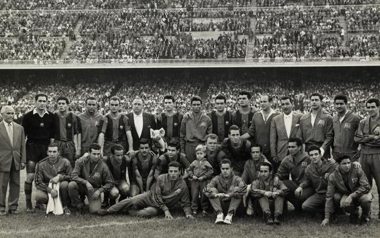
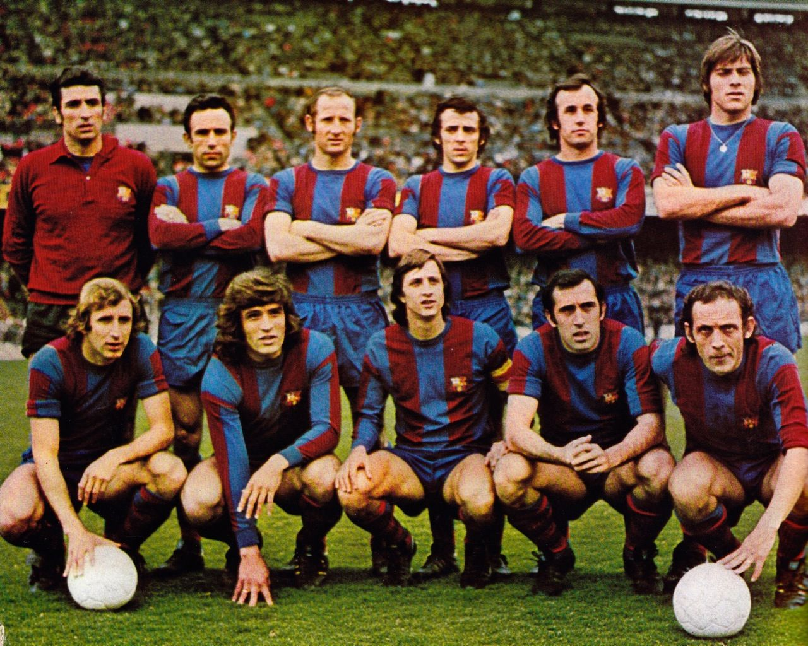
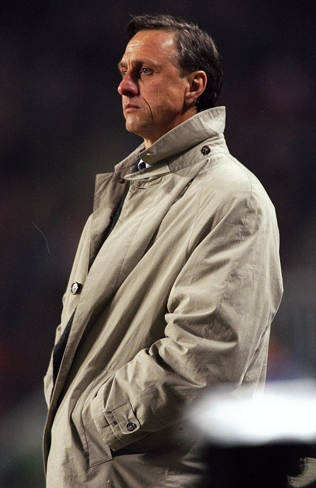
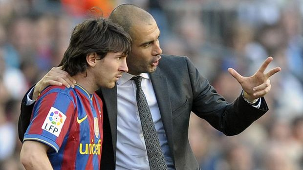
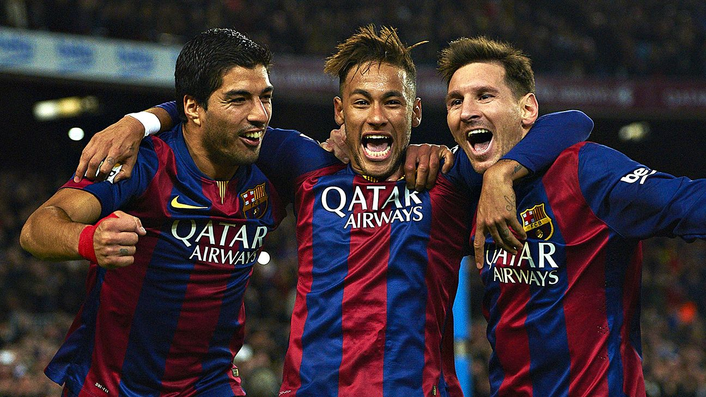
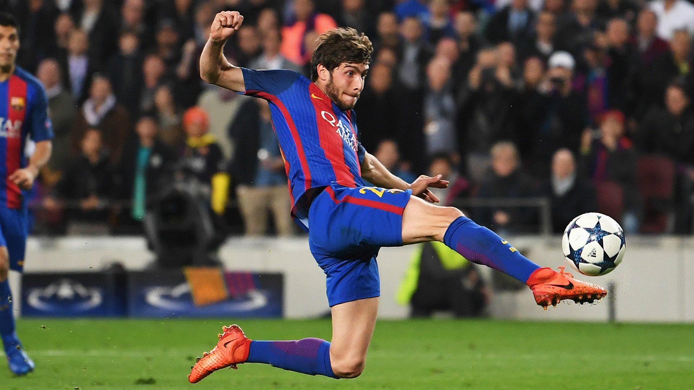

History of FC Barcelona
1899-1922
On 22 October 1899, Swiss Hans Gamper placed an advertisement in Los Deportes declaring his wish to form a football club; a positive response resulted in a meeting at the Gimnasio Solé on 29 November. Eleven players attended Walter Wild (the first director of the club), Luis de Ossó, Bartomeu Terradas, Otto Kunzle, Otto Maier, Enric Ducal, Pere Cabot, Carles Pujol, Josep Llobet, John Parsons, and William Parsons and Foot-Ball Club Barcelona was born.
FC Barcelona had a successful start in regional and national cups, competing in the Campionat de Catalunya and the Copa del Rey. In 1901, the club participated in the very first football competition played on the Iberian Peninsula, the Copa Macaya, narrowly losing to Hispania AC, but in the following year, Barça won the tournament, the club's first-ever piece of silverware, and then participated in the first Copa del Rey, losing 1–2 to Bizcaya (a combination of players from Athletic Club and Bilbao FC) in the final. In 1908, Hans Gamper now known as Joan Gamper became club president in a desperate attempt to save Barcelona from extinction, finding the club struggling not just on the pitch, but also financially and socially, after not winning a competition since the Campionat de Catalunya in 1905. He said in a meeting, "Barcelona cannot die and must not die. If there is nobody who is going to try, then I will assume the responsibility of running the club from now on." Club president on five separate occasions between 1908 and 1925, he spent 25 years in total at the helm. One of his main achievements was ensuring Barça acquire its own stadium and thus generate a stable income.
On 14 March 1909, the team moved into the Camp de la Indústria, a stadium with a capacity of 8,000. To celebrate their new surroundings, the club conducted a logo contest the following year. Carles Comamala won the contest, and his suggestion became the crest that the club still wears with some minor changes as of the present day.
Gamper simultaneously launched a campaign to recruit more club members, and by 1922, the club had more than 20,000, who helped finance a new stadium. The club then moved to the new Les Cortes, which they inaugurated the same year. Les Cortes had an initial capacity of 30,000, and in the 1940s it was expanded to 60,000.
In 1912, Gamper recruited Paulino Alcántara, the club's seventh all-time top-scorer, and in 1917, Gamper also recruited Jack Greenwell as the first full-time manager in Barcelona's history. After this hiring, the club's fortunes began to improve on the field and soon enjoyed its first "golden age". Along with Alcántara, the Barça team under Greenwell also included Sagibarba, Ricardo Zamora, Josep Samitier, Félix Sesúmaga and Franz Platko. This team won 9 out of 10 Campionats de Catalunya between 1919 and 1928 and two Copa del Rey titles in 1920 and 1922. In total, during the Gamper-led era, Barcelona won eleven Campionats de Catalunya, six Copa del Rey and four Pyrenees Cups.
1923-1957
14 June 1925, in a spontaneous reaction against Primo de Rivera's dictatorship, the crowd in the stadium jeered the Royal March. As a reprisal, the ground was closed for six months and Gamper was forced to relinquish the presidency of the club. This coincided with the transition to professional football, and, in 1926, the directors of Barcelona publicly claimed, for the first time, to operate a professional football club.
Although they continued to have players of the standing of Josep Escolà, the club now entered a period of decline, in which political conflict overshadowed sports throughout society. Attendance at matches dropped as the citizens of Barcelona were occupied with discussing political matters. Although the team won the Campionat de Catalunya in 1930, 1931, 1932, 1934, 1936 and 1938, success at a national level (with the exception of the 1937 disputed title) evaded them.
A month after the Spanish Civil War began in 1936, several players from Barcelona enlisted in the ranks of those who fought against the military uprising, along with players from Athletic Bilbao. On 6 August, Falangist soldiers near Guadarrama murdered club president Josep Sunyol, a representative of the pro-independence political party. He was dubbed the martyr of barcelonisme, and his murder was a defining moment in the history of FC Barcelona and Catalan identity. In the summer of 1937, the squad was on tour in Mexico and the United States, where it was received as an ambassador of the Second Spanish Republic. The tour led to the financial security of the club, but also resulted in half of the team seeking asylum in Mexico and France, making it harder for the remaining team to contest for trophies.
On 16 March 1938, Barcelona came under aerial bombardment from the Italian Air Force, causing more than 3,000 deaths, with one of the bombs hitting the club's offices. A few months later, Catalonia came under occupation and as a symbol of the "undisciplined" Catalanism, the club, now down to just 3,486 members, faced a number of restrictions. All signs of regional nationalism, including language, flag and other signs of separatism were banned throughout Spain. The Catalan flag was banned and the club were prohibited from using non-Spanish names. These measures forced the club to change its name to Club de Fútbol Barcelona and to remove the Catalan flag from its crest.
In 1943, Barcelona faced rivals Real Madrid in the semi-finals of Copa del Generalísimo (now the Copa del Rey). The first match at Les Corts was won by Barcelona 3–0. Real Madrid comfortably won the second leg, beating Barcelona 11–1. According to football writer Sid Lowe, "There have been relatively few mentions of the game [since] and it is not a result that has been particularly celebrated in Madrid. Indeed, the 11–1 occupies a far more prominent place in Barcelona's history. This was the game that first formed the identification of Madrid as the team of the dictatorship and Barcelona as its victims." It has been alleged by local journalist Paco Aguilar that Barcelona's players were threatened by police in the changing room, though nothing was ever proven.
Coach Ferdinand Daučík and László Kubala led the team to five different trophies including La Liga, the Copa del Generalísimo, the Copa Latina, the Copa Eva Duarte, and the Copa Martini Rossi in 1952. In 1953, the club won La Liga and the Copa del Generalísimo again.
1957-1978
With Helenio Herrera as coach, a young Luis Suárez, the European Footballer of the Year in 1960, and two influential Hungarians recommended by Kubala, Sándor Kocsis and Zoltán Czibor, the team won another national double in 1959 and a La Liga and Fairs Cup double in 1960. In 1961, they became the first club to beat Real Madrid in a European Cup play-off. However, they lost 2–3 to Benfica in the final.
The 1960s were less successful for the club, with Real Madrid monopolising La Liga. The completion of the Camp Nou, finished in 1957, meant the club had little money to spend on new players. The 1960s saw the emergence of Josep Maria Fusté and Carles Rexach, and the club won the Copa del Generalísimo in 1963 and the Fairs Cup in 1966. Barcelona restored some pride by beating Real Madrid 1–0 in the 1968 Copa del Generalísimo final at the Santiago Bernabéu in front of Francisco Franco, with coach Salvador Artigas, a former republican pilot in the Civil War. With the end of Franco's dictatorship in 1974, the club changed its official name back to Futbol Club Barcelona and reverted the crest to its original design, including the original letters once again.
The 1973–74 season saw the arrival of Johan Cruyff, who was bought for a world record £920,000 from Ajax. Already an established player with Ajax, Cruyff quickly won over the Barcelona fans when he told the European press that he chose Barcelona over Real Madrid because he could not play for a club associated with Francisco Franco. He further endeared himself when he named his son "Jordi", after the local Catalan Saint George. Next to champions like Juan Manuel Asensi, Carles Rexach and Hugo Sotil, he helped the club win the 1973–74 season for the first time since 1960, defeating Real Madrid 5–0 at the Santiago Bernabéu en route. He was crowned European Footballer of the Year in 1973 during his first season with Barcelona (his second Ballon d'Or win; he won his first while playing for Ajax in 1971). Cruyff received this prestigious award a third time (the first player to do so) in 1974, while he was still with Barcelona.
1978-2000
In 1978, Josep Lluís Núñez became the first elected president of FC Barcelona, and, since then, the members of Barcelona have elected the club president. The process of electing a president of FC Barcelona was closely tied to Spain's transition to democracy in 1974 and the end of Franco's dictatorship. The new president's main objective was to develop Barcelona into a world-class club by giving it stability both on and off the pitch. His presidency was to last for 22 years, and it deeply affected the image of Barcelona, as Núñez held to a strict policy regarding wages and discipline, letting go of such players as Diego Maradona, Romário and Ronaldo rather than meeting their demands.
On 16 May 1979, the club won its first European Cup Winners' Cup by beating Fortuna Düsseldorf 4–3 in Basel in a final watched by more than 30,000 travelling blaugrana fans. The same year, Núñez began to invest in the club's youth programme by converting La Masia into a dormitory for young academy players from abroad. The name of the dormitory would later become synonymous with the youth programme of Barcelona.

In June 1982, Diego Maradona was signed for a world record fee of £5 million from Boca Juniors. In the following season, under coach César Luis Menotti, Barcelona won the Copa del Rey, beating Real Madrid. Maradona's time with Barcelona, however, was short-lived and he soon left for Napoli. At the start of the 1984–85 season, Terry Venables was hired as manager and he won La Liga with noteworthy displays by German midfielder Bernd Schuster. The next season, he took the team to their second European Cup final, only to lose on penalties to Steaua București during a dramatic evening in Seville.
Around this time, tensions began to arise between what was perceived as president Núñez's dictatorial rule and the nationalistic support group, Boixos Nois. The group, identified with a left-wing separatism, repeatedly demanded the resignation of Núñez and openly defied him through chants and banners at matches. At the same time, Barcelona experienced an eruption in skinheads, who often identified with a right-wing separatism. The skinheads slowly transferred the Boixos Nois' ideology from liberalism to fascism, which caused division within the group and a sudden support for Núñez's presidency. Inspired by British hooligans, the remaining Boixos Nois became violent, causing havoc leading to large-scale arrests.
After the 1986 FIFA World Cup, Barcelona signed the English top scorer Gary Lineker, along with goalkeeper Andoni Zubizarreta, but the team could not achieve success, as Schuster was excluded from the team. Terry Venables was subsequently fired at the beginning of the 1987–88 season and replaced with Luis Aragonés. The season finished with the players rebelling against president Núñez, in an event known as the Hesperia mutiny, and a 1–0 victory in the Copa del Rey final against Real Sociedad.
Johan Cruyff Era
In 1988, Johan Cruyff returned to the club, this time as manager and he assembled what would later be dubbed the "Dream Team". He used a mix of Spanish players like Pep Guardiola, José Mari Bakero, Jon Andoni Goikoetxea, Miguel Angel Nadal and Txiki Begiristain while signing international players such as Ronald Koeman, Michael Laudrup, Romário and Hristo Stoichkov.
It was ten years after the inception of the youth programme, La Masia, when the young players began to graduate and play for their first team. One of the first graduates, who would later earn international acclaim, was future Barcelona coach Pep Guardiola. Under Cruyff's guidance, Barcelona won four consecutive La Liga titles from 1991 to 1994. They beat Sampdoria in both the 1989 UEFA Cup Winners' Cup final and the 1992 European Cup final at Wembley, with a free kick goal from Dutch international Ronald Koeman. They also won a Copa del Rey in 1990, the European Super Cup in 1992 and three Supercopa de España trophies. With 11 trophies, Cruyff became the club's most successful manager at that point. He also became the club's longest consecutive serving manager, serving eight years. Cruyff's fortune was to change, and, in his final two seasons, he failed to win any trophies and fell out with president Josep Lluís Núñez, resulting in his departure. On the legacy of Cruyff's football philosophy and the passing style of play he introduced to the club, future coach of Barcelona Pep Guardiola would state, "Cruyff built the cathedral, our job is to maintain and renovate it.
Reacting to Cruyff's departure, an independent protest group was organised by Armand Caraben, Joan Laporta and Alfons Godall. The objective of the group, called L'Elefant Blau, was to oppose the presidency of Núñez, which they regarded as a corruption of the club's traditional values. Laporta would later take over the presidency of Barcelona in 2003.
Cruyff was briefly replaced by Bobby Robson, who took charge of the club for a single season in 1996–97. He recruited Ronaldo for a world record transfer fee from his previous club, PSV and delivered a cup treble, winning the Copa del Rey, UEFA Cup Winners' Cup and the Supercopa de España, with Ronaldo registering 47 goals in 49 games. Despite his success, Robson was only ever seen as a short-term solution while the club waited for Louis van Gaal to become available.
Like Maradona, Ronaldo only stayed a short time before he left for Inter Milan in another world record transfer. However, new heroes emerged, such as Luís Figo, Patrick Kluivert, Luis Enrique and Rivaldo, and the team won a Copa del Rey and La Liga double in 1998. In 1999, the club celebrated its centenari, winning the Primera División title, and Rivaldo became the fourth Barcelona player to be awarded European Footballer of the Year. Despite this domestic success, the failure to emulate Real Madrid in the Champions League led to van Gaal and Núñez resigning in 2000.
2000-2008
Despite better form in La Liga and a good run to the semi-finals of the Champions League, Rexach was never viewed as a long-term solution and that summer Van Gaal returned to the club for a second spell as manager. What followed, despite another decent Champions League performance, was one of the worst La Liga campaigns in the club's history, with the team as low as 15th in February 2003. This led to Van Gaal's resignation and replacement for the rest of the campaign by Radomir Antić, though a sixth-place finish was the best that he could manage. At the end of the season, Antić's short-term contract was not renewed, and club president Joan Gaspart resigned, his position having been made completely untenable by such a disastrous season on top of the club's overall decline in fortunes since he became president three years prior.
After the disappointment of the Gaspart era, the combination of a new young president, Joan Laporta, and a young new manager, former Dutch and AC Milan star Frank Rijkaard, saw the club bounce back. On the field, an influx of international players, including Ronaldinho, Deco, Henrik Larsson, Ludovic Giuly, Samuel Eto'o, Rafael Márquez and Edgar Davids, combined with home grown Spanish players, such as Carles Puyol, Andrés Iniesta, Xavi and Víctor Valdés, led to the club's return to success. Barcelona won La Liga and the Supercopa de España in 2004–05, and Ronaldinho and Eto'o were voted first and third, respectively, in the FIFA World Player of the Year awards.
In the 2005–06 season, Barcelona repeated their league and Supercopa successes. The pinnacle of the league season arrived at the Santiago Bernabéu in a 3–0 win over Real Madrid. It was Rijkaard's second victory at the Bernabéu, making him the first Barcelona manager to win there twice. Ronaldinho's performance was so impressive that after his second goal, which was Barcelona's third, some Real Madrid fans gave him a standing ovation. In the Champions League, Barcelona beat the English club Arsenal in the final. Trailing 1–0 to a ten-man Arsenal and with less than 15 minutes remaining, they came back to win 2–1, with substitute Henrik Larsson, in his final appearance for the club, setting up goals for Samuel Eto'o and fellow substitute Juliano Belletti, for the club's first European Cup victory in 14 years.
Despite being the favourites and starting strongly, Barcelona finished the 2006–07 season without trophies. A pre-season US tour was later blamed for a string of injuries to key players, including leading scorer Eto'o and rising star Lionel Messi. There was open feuding as Eto'o publicly criticised coach Rijkaard and Ronaldinho. Ronaldinho also admitted that a lack of fitness affected his form. In La Liga, Barcelona were in first place for much of the season, but inconsistency in the New Year saw Real Madrid overtake them to become champions. Barcelona advanced to the semi-finals of the Copa del Rey, winning the first leg against Getafe 5–2, with a goal from Messi bringing comparison to Diego Maradona's goal of the century, but then lost the second leg 4–0. They took part in the 2006 FIFA Club World Cup, but were beaten by a late goal in the final against Brazilian side Internacional. In the Champions League, Barcelona were knocked out of the competition in the last 16 by eventual runners-up Liverpool on away goals.
Barcelona finished the 2007–08 season third in La Liga and reached the semi-finals of the UEFA Champions League and Copa del Rey, both times losing to the eventual champions, Manchester United and Valencia, respectively. The day after a 4–1 defeat to Real Madrid, Joan Laporta announced that Barcelona B coach Pep Guardiola would take over Frank Rijkaard's duties on 30 June 2008.
Guardiola Era

Barcelona B youth manager Pep Guardiola took over Frank Rijkaard's duties at the conclusion of the season. Guardiola brought with him the now famous tiki-taka style of play he had been taught during his time in the Barcelona youth teams. In the process, Guardiola sold Ronaldinho and Deco and started building the Barcelona team around Xavi, Andrés Iniesta and Lionel Messi.
Barça beat Athletic Bilbao 4–1 in the 2009 Copa del Rey Final, winning the competition for a record-breaking 25th time. A historic 2–6 victory against Real Madrid followed three days later and ensured that Barcelona became 2008–09 La Liga champions. Barça finished the season by beating Manchester United 2–0 at the Stadio Olimpico in Rome, with goals from Eto'o and Messi, to win their third Champions League title, and complete the first ever treble won by a Spanish team. The team went on to win the 2009 Supercopa de España against Athletic Bilbao and the 2009 UEFA Super Cup against Shakhtar Donetsk, becoming the first European club to win both domestic and European Super Cups following a treble. In December 2009, Barcelona won the 2009 Club World Cup. Barcelona accomplished two new records in Spanish football in 2010 as they retained the La Liga trophy with 99 points and won the Supercopa de España for a ninth time.
In November 2010, Barcelona defeated their main rival Real Madrid 5–0 in El Clásico. At the ceremony for the 2010 FIFA Ballon d'Or in December, Barcelona's La Masia became the first youth academy ever to have all three finalists for the Ballon d'Or, with Messi, Iniesta and Xavi being named the three best players in the world for 2010. In the 2010–11 season, Barcelona retained the La Liga trophy, their third title in succession, finishing with 96 points. In April 2011, the club reached the Copa del Rey final, losing 1–0 to Real Madrid at the Mestalla Stadium in Valencia. In May, Barcelona defeated Manchester United in the 2011 Champions League Final 3–1 held at Wembley Stadium, a repeat of the 2009 final, winning their fourth European Cup. In August 2011, La Masia graduate Cesc Fàbregas was bought from Arsenal and he would help Barcelona defend the Spanish Supercup against Real Madrid. The Supercup victory brought the total number of official trophies to 73, matching the number of titles won by Real Madrid.
Later the same month, Barcelona won the UEFA Super Cup defeating Porto 2–0 with goals from Messi and Fàbregas. This extended the club's overall number of official trophies to 74, surpassing Real Madrid's total amount of official trophies. The Super Cup victory also saw Guardiola win his 12th trophy out of a possible 15 in his three years at the helm of the club, becoming the all-time record holder of most titles won as a coach at Barcelona.
In December, Barcelona won the Club World Cup for a record second time since its establishment, after defeating 2011 Copa Libertadores holders Santos 4–0 in the final thanks to two goals from Messi and goals from Xavi and Fàbregas. As a result, the overall trophy haul during the reign of Guardiola was further extended and saw Barcelona win their 13th trophy out of a possible 16. Considered by some in the sport to be the greatest team of all time, with Manchester United manager Alex Ferguson stating, ”They mesmerise you with their passing”, their five trophies in 2011 saw them receive the Laureus World Sports Award for Team of the Year.
In the 2011–12 season, Barcelona lost the semi-finals of the Champions League against Chelsea. Guardiola, who had been on a rolling contract and had faced criticism over his recent tactics and squad selections, announced that he would step down as manager on 30 June and be succeeded by assistant Tito Vilanova. Guardiola finished his tenure with Barça winning the Copa del Rey final 3–0, bringing the tally to 14 trophies that Barça had won under his coaching.
2014-2020
On 22 July 2013, Gerardo "Tata" Martino was confirmed as manager of Barcelona for the 2013–14 season. Barcelona won the 2013 Supercopa de España 1–1 on away goals. On 23 January 2014, Sandro Rosell resigned as president by the admissibility of a complaint for alleged misappropriation following the transfer of Neymar. Josep Maria Bartomeu replaced him to finish the term.
Barcelona won the treble in the 2014–15 season, winning La Liga, Copa del Rey and Champions League titles, and became the first European team to have won the treble twice. On 17 May, the club clinched their 23rd La Liga title after defeating Atlético Madrid. This was Barcelona's seventh La Liga title in the last ten years. On 30 May, the club defeated Athletic Bilbao in the Copa del Rey final at Camp Nou. On 6 June, Barcelona won the 2015 Champions League Final with a 3–1 win against Juventus, which completed the treble, the club's second in six years. Barcelona's attacking trio of Messi, Suárez and Neymar, dubbed "MSN", scored 122 goals in all competitions, the most in a season for an attacking trio in Spanish football history.
On 11 August, Barcelona started the 2015–16 season winning a joint record fifth European Super Cup by beating Sevilla 5–4 in the 2015 UEFA Super Cup. They ended the year with a 3–0 win over Argentine club River Plate in the 2015 Club World Cup final on 20 December to win the trophy for a record third time, with Suárez, Messi and Iniesta the top three players of the tournament. The Club World Cup was Barcelona's 20th international title, a record only matched by Egyptian club Al Ahly. By scoring 180 goals in 2015 in all competitions, Barcelona set the record for most goals scored in a calendar year, breaking Real Madrid's record of 178 goals scored in 2014. On 10 February 2016, qualifying for the sixth Copa del Rey final in the last eight seasons, Luis Enrique's Barcelona broke the club's record of 28 consecutive games unbeaten in all competitions set by Guardiola's team in the 2010–11 season, with a 1–1 draw with Valencia in the second leg of the 2015–16 Copa del Rey. With a 5–1 win at Rayo Vallecano on 3 March, Barcelona's 35th match unbeaten, the club broke Real Madrid's Spanish record of 34 games unbeaten in all competitions from the 1988–1989 season. After Barça reached 39 matches unbeaten, their run ended on 2 April 2016 with a 2–1 defeat to Real Madrid at Camp Nou. On 14 May 2016, Barcelona won their sixth La Liga title in eight seasons. The front three of Messi, Suárez and Neymar finished the season with 131 goals, breaking the record they had set the previous year for most goals by an attacking trio in a single season.
On 8 March 2017, Barcelona made the largest comeback in Champions League history in the 2016–17 UEFA Champions League Round of 16 second Leg, defeating Paris Saint-Germain 6–1 (aggregate score 6–5), despite losing the first leg in France by a score of 4–0. On 29 May 2017, former player Ernesto Valverde was named as Luis Enrique's successor. On 20 September 2017, Barcelona issued a statement exercising their stance on the 2017 Catalan referendum saying, "FC Barcelona, in holding the utmost respect for its diverse body of members, will continue to support the will of the majority of Catalan people, and will do so in a civil, peaceful, and exemplary way". The match against UD Las Palmas on the referendum day was requested to be postponed by the Barcelona board due to heavy violence in Catalonia, but it (the request) was declined by La Liga, therefore being held behind closed doors. Two directors, Jordi Monés and Carles Vilarrubí, handed in their resignations in protest at the game's being played. Winning La Liga for the 2017–18 season, on 9 May 2018, Barcelona defeated Villarreal 5–1 to set the longest unbeaten streak (43 games) in La Liga history. On 27 April 2019, Barcelona won their 26th La Liga title. However, the La Liga title was overshadowed by an improbable Champions League exit to Liverpool in the semi-finals, with Barça losing the second leg 0–4 after being up 3–0 after a home victory.
On 13 January 2020, following the loss to Atlético Madrid in the Spanish Supercup, former Real Betis coach Quique Setién replaced Ernesto Valverde as the new head coach of Barcelona. Ultimately Barcelona finished the season trophyless for first time in 12 years. On 17 August, the club confirmed that Setién had been removed from his position as manager with director of football Eric Abidal also dismissed from his position. Two days later, Ronald Koeman was appointed as the new head coach of Barcelona. Rising dissatisfaction among supporters due to worsening finances and decline on the pitch in the previous season led to Josep Maria Bartomeu announcing his resignation as president on 27 October 2020, to avoid facing a vote of no confidence from the club members.